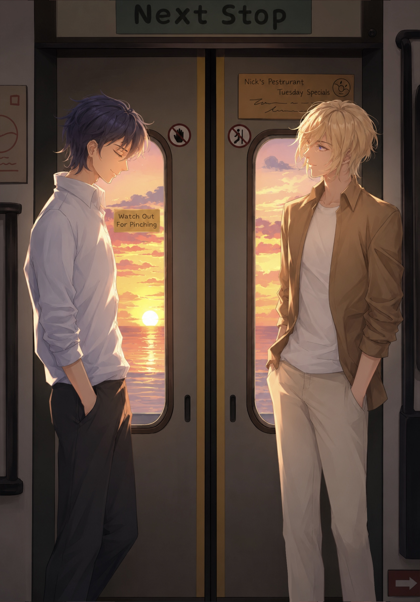
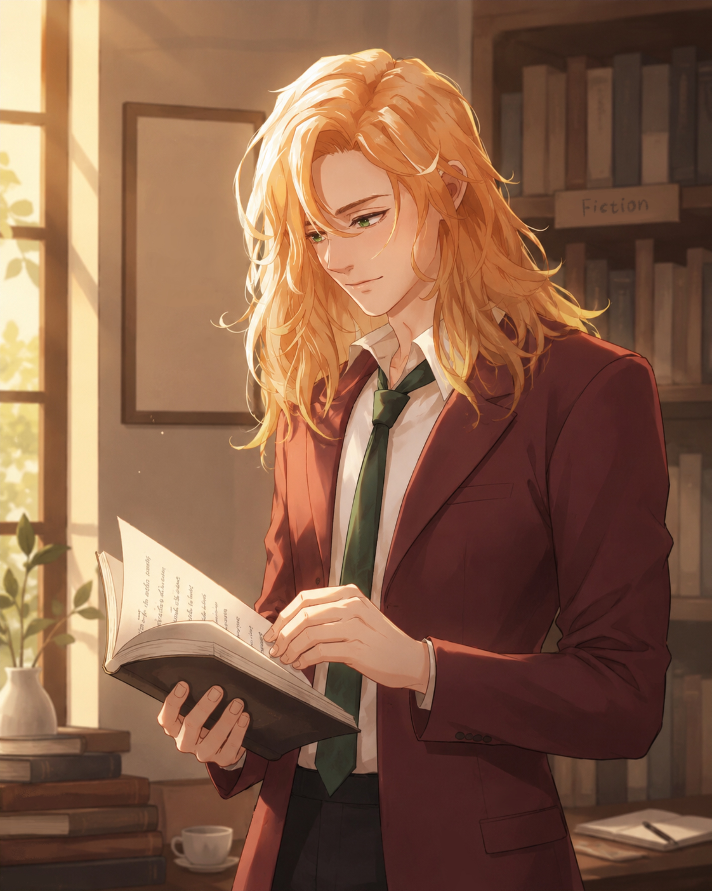

Personal Illustration
Independent Illustration — Character Design • Visual Storytelling
Drawing for its own sake
Outside of larger game projects, I create standalone illustrations that let me experiment freely with composition, lighting, color, and storytelling — no brief, no client, just curiosity.
Many of these pieces are inspired by games, animation, and everyday moments that spark my imagination. They're where I test new styles, sharpen technical habits, and figure out what my own visual voice actually looks like.
Character studies
Illustrations built around a single character, where the figure fills most of the canvas — studies in pose, personality, and silhouette.




Scenes & studies
Pieces where characters sit inside a larger world — environment studies and narrative moments built around mood and setting rather than a single subject.